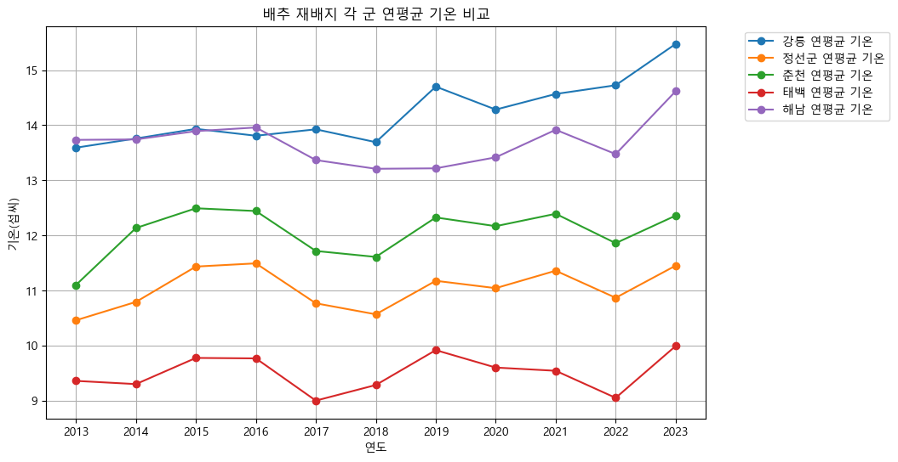
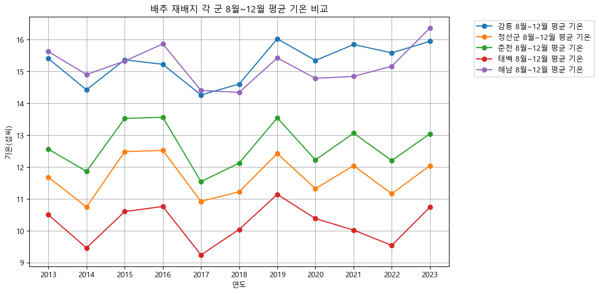

기후 분석
재배지 연평균 기온 비교

강릉은 2017년 이후 연평균 기온이 꾸준히 상승하는 추세를 보였습니다. 정선군과 춘천은 상대적으로 유사한 기온 변화 패턴을 나타냈습니다.
수확기 기온
8월~12월 평균 기온 비교

배추 수확 시기(8~12월) 동안 해남과 강릉의 기온이 유사한 양상을 보였습니다. 지역 간 절대적인 기온 차이는 있지만, 전반적으로 비슷한 변화 패턴을 확인할 수 있었습니다.